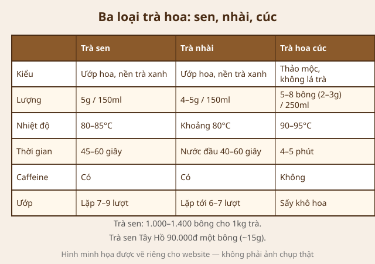

Trà hoa: trà sen, trà nhài, trà hoa cúc — cách ướp hương và pha
Tác giả: Ruler
Một ngày uống trà hoa có thể chia làm ba buổi: sáng uống nhài cho dễ chịu, trưa mời khách bằng sen, tối chuyển sang cúc vì không còn lá trà trong chén. Ba loại đó khác nhau ở cả cách làm lẫn cách pha, nhưng người mới thường chỉ nhìn tên hoa trên bao bì rồi mua. Bài này làm ngược lại: bắt đầu từ buổi uống trong ngày, rồi mới tới hương, tới giá, tới cách ướp và cách pha. Ba loại sen, nhài, cúc được nói kỹ nhất; năm loại còn lại gom trong một bảng tra nhanh ở giữa bài.
Câu hỏi đầu tiên: tối nay uống được không?
Trước khi chọn hương, hãy xem trong gói có lá trà hay không. Đây là điểm phân biệt quan trọng nhất của trà hoa, theo Thuận Trà Thái Nguyên. Ở kiểu ướp hoa, người làm lấy lá trà — thường chọn trà xanh — ủ chung với hoa tươi để lá hút hương, rồi sàng bỏ hoa đi trước khi đóng gói. Vì vậy chén trà vẫn có vị trà và vẫn có caffeine. Trà thảo mộc từ hoa thì trong gói toàn là hoa hay đài hoa đã sấy khô, không có lá trà nào; theo Wikipedia tiếng Anh, loại này không pha từ cây trà Camellia sinensis và đa số vốn không có caffeine.
Bảng dưới đây xếp 8 loại theo câu hỏi đó, rồi theo nhiệt độ nước. Bảng gom các con số từ Thuận Trà, chỉ đổi cách trình bày.
| Loại | Có lá trà không? | Nước pha | Thời gian | Giá niêm yết của Thuận Trà |
|---|---|---|---|---|
| Trà sen | Có, nền trà xanh | 80–85°C | 45–60 giây | 90.000đ/bông (khoảng 15 g) |
| Trà nhài | Có, nền trà xanh | Khoảng 80°C | Nước đầu 40–60 giây | 120.000đ/100 g |
| Trà hoa bưởi | Có, nền trà xanh | Khoảng 80°C | Như trà nhài | 120.000đ/100 g |
| Nụ hoa chè | Là nụ của chính cây chè | 90°C | 2–3 phút | 150.000đ/túi 150 g |
| Trà hoa cúc | Không | 90–95°C | 4–5 phút | Không bán |
| Atiso đỏ | Không, dùng đài hoa | Nước sôi | 5–8 phút | Không bán |
| Trà hoa hồng | Không | Khoảng 90°C | 4–5 phút | Không bán |
| Hoa đậu biếc | Không | 90°C | 3–5 phút | Không bán |
Lượng cho một ấm, theo cùng nguồn: sen 5 g cho 150 ml; nhài và bưởi 4–5 g cho 150 ml; nụ hoa chè 3 g cho 200 ml; cúc 5–8 bông (khoảng 2–3 g) cho 250 ml; atiso đỏ 3–5 g cho 500 ml; hồng 5–6 nụ cho 250 ml; đậu biếc 8–10 bông cho 300 ml.
Về caffeine, theo đánh giá của EFSA mà Thuận Trà dẫn lại, người lớn khỏe mạnh uống tới 400 mg caffeine một ngày, cộng từ mọi nguồn, vẫn nằm trong mức không đáng lo. Người mang thai nên giữ dưới 200 mg một ngày, và khoảng 100 mg uống sát giờ ngủ có thể khiến một số người khó ngủ. Cũng theo Thuận Trà, ai nhạy caffeine thì nên uống trà ướp hoa trên nền trà vào buổi sáng hoặc đầu giờ chiều, còn buổi tối thì chuyển sang trà hoa thảo mộc như trà hoa cúc. Bài này ghi lại lời khuyên đó theo đúng nguồn, không đưa thêm lời khuyên cho từng người. Nụ hoa chè là trường hợp riêng: nó là một bộ phận của cây chè nên Thuận Trà xếp nó vào nhóm có caffeine, nhưng nguồn này cũng nói rõ chưa có số đo riêng, nên người nhạy caffeine cứ tính như trong đó vẫn có caffeine.
Đứng trước kệ trà hoa, ba thứ cần kiểm tra trên nhãn — nhưng theo thứ tự dễ làm nhất khi mua hàng, không theo thứ tự của Thuận Trà. Thứ nhất là tên nơi làm ra gói trà, hạn dùng với cách bảo quản: thiếu một trong ba thứ đó thì hỏi người bán trước khi mua, vì gói không ghi đủ thông tin thì không có gì để đối chiếu sau này. Thứ hai là mùi thơm đến từ đâu: nếu thành phần có thêm chữ "hương liệu" hay "hương tự nhiên", nghĩa là một phần mùi thơm được thêm vào sau, không phải chỉ do hoa ướp. Thứ ba mới là thành phần chính: thấy chữ trà xanh đi cùng tên một loài hoa thì đó là trà ướp hoa; thấy gói chỉ ghi toàn hoa khô — ví dụ ghi 100% hoa cúc sấy khô, hay ghi đài hoa bụp giấm — thì đó là trà thảo mộc, không có lá trà.
Chọn hương theo mũi, không theo tên
Sen, nhài và cúc thơm khác nhau rõ rệt, nhưng khác nhau đó khó tả bằng chữ. Cách chọn nhanh nhất là nếm thử một ấm nhỏ của từng loại trước khi mua theo cân. Thuận Trà bán combo ba loại — một bông sen khoảng 15 g, 100 g nhài và 100 g bưởi — niêm yết 330.000đ; uống thử cả ba rồi hãy quyết định mua loại nào theo cân. Gợi ý của bài viết: mua combo hoặc mua ít trước, hợp hương nào mới mua nhiều, vì trà hoa mất hương nhanh sau khi mở túi.
Uống thử rồi mới thấy ba hương này đi ba hướng khác nhau. Sen cho cảm giác sâu và rõ nhất, ngọt ở lại lâu sau khi nuốt, và nước đầu tiên là nước thơm nhất. Nhài thì hiền hơn: mùi quen, nhẹ nhàng, hơi chát một chút, nên người chưa uống trà bao giờ thường bắt đầu từ nó mà không bị ngợp. Cúc thì đứng riêng một chỗ: gói toàn hoa khô, nên vị mở đầu ngọt nhẹ rồi cuối chén hơi đắng. Loài hoa làm ra cúc là Chrysanthemum morifolium và C. indicum, theo Wikipedia tiếng Anh; nước pha ra có màu vàng, từ nhạt tới tươi.
Ba điểm khác biệt khi pha cúc so với sen và nhài: nước nóng hơn (90–95°C so với 80–85°C), lượng tính bằng bông thay vì gram, và ủ dài hơn (4–5 phút so với 40–60 giây). Hoa cúc khô không có lá trà nên nước nóng không làm chát, và cần ủ lâu để hương thảo mộc ngấm ra nước. Một lưu ý nhỏ về con số: trang Wikipedia tiếng Anh về trà hoa cúc ghi khung thời gian 2–3 phút trong bảng tóm tắt, khác với 4–5 phút của Thuận Trà. Bài này dùng 4–5 phút theo Thuận Trà, vì đó là con số đi cùng lượng 5–8 bông cho 250 ml; bạn pha theo mốc nào thì ghi lại mốc đó để lần sau làm lại được.

Hình minh họa tự vẽ — không phải ảnh chụp thật.
Uống cúc chi Hưng Yên lần đầu, nhiều người ngạc nhiên vì vị không hoàn toàn dễ chịu: bông nhỏ, vàng đậm, nước vào miệng hơi ngái, cuối chén đắng nhẹ. Vì vậy người làm thường xử lý giống này trước khi pha — hấp hơi nóng hoặc ủ mát một lúc — để lấy bớt phấn hoa ra ngoài. Còn lại sau bước đó là hương thảo mộc ấm và màu nước vàng óng, tức là phần đáng giữ của giống cúc này. Kinh tế & Tiêu dùng ghi lại cách xử lý này như một bước riêng của cúc chi, không phải của mọi loại cúc.
Vì sao một gói đắt gấp mấy lần gói khác
Giá trà hoa chênh nhau nhiều không phải vì hoa đẹp hơn, mà vì công làm ra nó khác nhau ở bốn chỗ: bao nhiêu hoa, hái lúc nào, ướp mấy lượt, sấy ra sao. Bảng dưới đây gom các con số đó lại; các con số lấy từ Kinh tế & Tiêu dùng, Wikipedia tiếng Việt về trà sen và Thuận Trà.
| Công đoạn | Trà sen | Trà nhài |
|---|---|---|
| Hoa cho 1 kg trà | 1.000–1.400 bông bách diệp hái lúc sớm | Không ghi theo cân trà |
| Giờ hái hoa | 4–5 giờ sáng, lúc sương còn đọng trên cánh | Nụ hái ban ngày, nở mạnh nhất 20–21 giờ đêm |
| Mỗi lượt ướp kéo dài | 24–48 giờ, ủ kín trong vò | Khoảng 20–24 giờ, theo Wikipedia tiếng Anh về trà nhài |
| Số lượt ướp | 7–9 lượt, suốt cả tháng | Tới 6–7 lượt với hạng cao |
| Sấy sau mỗi lượt | Dưới 70°C (than ủ tro hay máy sấy lạnh) | Sàng bỏ hoa cũ rồi ướp hoa mới |
| Hương còn lại tới | Nước thứ 5, thứ 6 | Không ghi theo số nước |
Một mẻ trà sen gạo sen kéo dài cả tháng, qua 7–9 lượt ướp, mà vẫn chỉ dùng một nguyên liệu duy nhất lấy từ bông sen: gạo sen. Gạo sen là hạt trắng muốt nằm trên đầu nhụy hoa, không phải cánh hoa, và chỉ tách được bằng tay — chỉ tách mạnh tay một chút, hạt dập là dịch ứa ra làm chua cả mẻ ủ. Sen phải đúng giống trăm cánh ở Hồ Tây — các đầm Đồng Trị, Thủy Sứ và làng Quảng Bá, theo Wikipedia tiếng Việt. Mỗi lượt ướp là một lớp trà xen một lớp gạo sen trong vò đậy kín; xong lượt thì sàng bỏ gạo cũ, sấy khô trà rồi ướp lượt mới; hương sen ngấm sâu dần qua từng lượt, tới mức vẫn còn ở những lần rót thứ 5, thứ 6.
Bên cạnh lối ướp gạo sen còn có lối ướp trong bông: lấy một bông sen tươi vừa hái, đặt trà vào lòng bông rồi buộc miệng bông lại, để qua đêm cho trà hút hương. Cách này đỡ tốn công hơn nhiều, nhưng mỗi bông chỉ ướp được một ít trà nên không làm được số lượng lớn.
Một mẻ nhài hỏng thường hỏng theo cùng một cách: khối ủ bị hầm nóng từ bên trong, hương thơm chuyển thành mùi nồng gắt khó chịu. Nguyên nhân là nụ vừa nở thì khối ủ nóng lên rất nhanh, nên suốt đêm ướp phải có người ở lại đảo đều khối ủ, cho hơi nóng và hơi ẩm thoát ra ngoài — giữ được khối ủ mát, hương hoa mới thấm từ từ vào tận lõi búp chè thay vì bốc hơi đi mất. Cả quy trình xoay quanh giờ nở của hoa: người làm hái nụ từ ban ngày, lúc nụ còn khép chặt, giữ nụ cho tới tối, đợi nụ hé ra mới đem ướp, vì hoa nhài chỉ nở khi trời tối. Trà nhài hạng cao còn ướp lặp lại tới 6–7 lượt, lượt nào cũng thay hoa mới sau khi sàng bỏ hoa cũ; mỗi lượt như vậy kéo dài khoảng 20–24 giờ, theo Wikipedia tiếng Anh về trà nhài.
Trà hái về chưa đem ướp ngay: người làm cất trong chum đất, phủ lá chuối lên trên, để yên chừng 20–30 ngày. Khoảng thời gian đó làm trà bớt chát, đồng thời cánh trà nở ra nên hút hương tốt hơn. Trước khi ướp, nền trà cũng phải đạt chuẩn riêng — chỉ chọn búp "một tôm hai lá", hái thật nhanh và nhẹ tay để búp không bị nhàu — đó là cách làm mà Wikipedia tiếng Việt về trà sen ghi lại. Một dấu hiệu của trà nền đạt chuẩn là sau khi sao, trong lá trà vẫn còn lại khoảng 5–7% nước.
Tính theo tiền mỗi ấm thì sen đắt nhất. Một bông trà sen Tây Hồ ướp bông niêm yết 90.000đ, mỗi bông khoảng 15 g, pha được khoảng 3 ấm 5 g, tức chừng 30.000đ một ấm; hộp trà gạo sen 55 g niêm yết 495.000đ. Trà hoa nhài niêm yết 120.000đ/100 g, tức khoảng 6.000đ cho một ấm 5 g. Các mức giá này chỉ ghi theo giá niêm yết của Thuận Trà tại thời điểm truy cập, không phải giá chung của thị trường.
Thật hay tẩm hương: ngửi và nhìn là biết
Gói trà thơm nồng ngay từ lúc chưa pha là gói nên nghi ngờ, chứ không phải gói nên mua. Cách thử một gói trà là đi theo trình tự bốn giác quan, theo Kinh tế & Tiêu dùng: mở gói ra ngửi trước — trà ướp thật chỉ có mùi nhẹ, thoáng qua rồi hết, còn trà tẩm hương liệu thì vừa mở gói đã thấy mùi nồng bốc lên mạnh. Rót nước rồi nhìn: nước trà ướp thật trong, màu vàng tươi; nước trà tẩm thì đục hoặc có màu lạ. Nếm: trà ướp thật chát dịu, không gắt, còn trà tẩm thì mùi hương mất ngay từ ngụm đầu. Cuối cùng nhìn bã trà sau nhiều lần rót: bã trà ướp thật vẫn mềm, không khô cứng. Cách thử này áp dụng được cho cả sen, nhài lẫn bưởi — hương của trà ướp thật chỉ bung ra từ từ trong chén, theo Wikipedia tiếng Anh về trà nhài.
Pha: ba ấm mẫu trong một buổi
Trà ướp hoa và trà thảo mộc pha khác nhau ở hai chỗ: nước pha trà ướp hoa chỉ vừa đủ nóng, không sôi; và thời gian hãm ngắn. Theo Kinh tế & Tiêu dùng, mức hợp lý cho trà ướp hoa là nước 80–85°C, hãm 30–45 giây, đựng trong chén sứ hoặc bình rót thủy tinh — nóng hơn nữa thì tinh dầu trong hoa, vốn rất dễ bay hơi, sẽ bị cháy. Thuận Trà thì ghi riêng cho từng loại: sen 45–60 giây, nhài nước đầu 40–60 giây. Hai nguồn vênh nhau ở khoảng này: bài này lấy 40–60 giây theo Thuận Trà làm điểm bắt đầu cho sen và nhài, và ghi rõ Kinh tế & Tiêu dùng đề nghị hãm ngắn hơn, chỉ 30–45 giây.
Bảng dưới đây là ba ấm mẫu để bạn pha thử trong một buổi; các con số lấy từ Thuận Trà.
| Ấm mẫu | Lượng trà | Nước | Thời gian |
|---|---|---|---|
| Sen, ấm 150 ml | 5 g | 80–85°C, tráng ấm nóng trước, đậy nắp khi hãm | 45–60 giây |
| Nhài, ấm 150 ml | 4–5 g | Khoảng 80°C | Nước đầu 40–60 giây, nước sau +15–20 giây |
| Cúc, cốc 250 ml | 5–8 bông (2–3 g) | 90–95°C | 4–5 phút |
Một điểm cần ghi rõ về trà sen ướp gạo sen: hai bài hướng dẫn của cùng Thuận Trà nói khác nhau về nhiệt độ, một bài ghi 75–80°C, bài còn lại ghi 85–90°C. Bài về cách pha trà Việt tại nhà đã ghi rõ mâu thuẫn này và khuyên bắt đầu từ 80–85°C. Bài này giữ nguyên lời khuyên đó, vì khoảng 80–85°C nằm giữa hai bài hướng dẫn và cũng khớp với khoảng chung cho trà sen trong bài so sánh 8 loại của cùng nguồn.
Vì sao người ướp hoa cứ chọn trà xanh làm nền
Đặt câu hỏi ngược lại sẽ thấy rõ hơn: vì sao không ướp hoa lên trà đen hay ô long cho tiện? Vấn đề nằm ở mùi của chính lá trà. Trà đen và ô long đã qua lên men nên mang sẵn mùi riêng của chúng, và mùi đó dễ át mất hương hoa tươi — đó là lý do Kinh tế & Tiêu dùng nêu ra. Trà xanh thì ngược lại: chát nhẹ, nước trong, ngọt hậu kéo dài, lại không có mùi riêng quá đậm, nên hương hoa có chỗ để nổi lên.
Bài báo này lấy hai ví dụ về búp nền tốt: chè Shan tuyết cổ thụ và nõn tôm ở Tân Cương — cả hai đều chát nhẹ, nước trong, hậu ngọt lâu. Điểm chung của chúng nằm ở hai đặc tính của lá trà xanh: hút hương nhanh và giữ hương lâu. Hút nhanh vì búp sau khi sao khô có bên trong xốp và rỗng, nên tinh dầu hoa vốn rất dễ bay hơi thấm vào nhanh; giữ lâu vì lá chưa lên men vẫn còn nhiều polyphenol tự nhiên, giúp các phân tử hương ở lại trong lá thay vì bay mất. Hai đặc điểm đó làm cho trà xanh trở thành nền ướp hương khó có loại trà khác thay thế.
Dị ứng và cất giữ: hai việc hay bị bỏ qua
Trà hoa cúc là loại cần lưu ý về dị ứng. Trang thông tin của NCCIH, cơ quan của Mỹ, viết về cúc Đức (German chamomile, tên Latin Matricaria recutita), và ghi rõ trang đó chỉ nói về loại này, không phải cúc La Mã (Roman chamomile). Theo NCCIH, người dị ứng với các cây cùng họ như cỏ phấn hương (ragweed), hoa cúc (chrysanthemums), cúc vạn thọ (marigolds) hay hoa cúc dại (daisies) dễ gặp phản ứng dị ứng với cúc Đức hơn. NCCIH cũng ghi tác dụng phụ ít gặp, có thể gồm buồn nôn, chóng mặt và phản ứng dị ứng, kể cả phản ứng nặng. Bài này chỉ ghi lại theo NCCIH, không đưa ra lời khuyên về sức khỏe cho từng người; người vốn dễ dị ứng với cây họ Cúc nên thử một lượng nhỏ trước, rồi cân nhắc kỹ trước khi uống thường xuyên.
Cách an toàn nhất với trà ướp hoa là mua lượng vừa đủ dùng trong vài tuần, và chọn nơi bán ghi rõ ngày đóng gói — vì hai nguồn đưa ra hai mốc khác nhau: Thuận Trà khuyên dùng hết gói đã mở trong vòng vài tuần, còn Wikipedia tiếng Anh về trà nhài ghi nên dùng trong vài tháng sau khi mở, vì hương hoa cứ giảm dần theo thời gian. Cất trong hũ đậy kín, đặt chỗ râm mát và xa cà phê cùng gia vị, vì trà hút mùi rất mạnh. Hoa thảo mộc sấy khô cũng cất trong hũ đậy kín nắp vì loại này hút ẩm rất nhanh; hoa đổi màu hay bốc mùi lạ thì bỏ đi. Và đừng cất trà ướp hoa chung một hũ với hoa thảo mộc: trà hút mùi mạnh, để chung thì hương thảo mộc sẽ lấn mất hương trà ướp. Cuối cùng, Thuận Trà nhắc thêm rằng trà hoa chỉ là một thức uống, không phải thuốc — người đang phải uống thuốc hàng ngày mà muốn dùng nhiều trà thảo mộc thì nên hỏi ý kiến bác sĩ trước khi uống đều.
Kết luận
Sen, nhài và cúc khác nhau ở cả cách làm lẫn cách pha. Sen là loại cầu kỳ nhất: 1.000–1.400 bông cho 1 kg trà, ướp gạo sen 7–9 lượt. Nhài là loại dễ uống nhất, nhưng làm ra nó lại vất vả nhất, vì người thợ phải thức suốt đêm đảo khối ủ cho thoát nhiệt. Cúc thì đơn giản nhất về nguyên liệu, nhưng pha khác hẳn hai loại kia vì trong gói không có lá trà, nên cần nước nóng hơn và ủ lâu hơn. Điểm chung của cả ba là đều cần nước vừa đủ nóng chứ không sôi, đều cần hãm nhanh hoặc ủ vừa đủ, và đều mất hương nhanh nếu để lâu hoặc cất chung với mùi khác. Bạn hãy bắt đầu từ trà nhài với 4–5 g cho ấm 150 ml, nước khoảng 80°C, hãm 40–60 giây — đây là loại dễ uống nhất và dễ pha đúng nhất. Khi đã quen với hương nhài, bạn sẽ nhận ra hương sen sâu hơn và hương cúc ấm hơn, và mỗi loại sẽ có một lúc uống riêng của nó trong ngày.
Nguồn tham khảo
- Thuận Trà Thái Nguyên (HTX Tâm Trà Việt), "Các loại trà hoa: 8 loại phổ biến và cách chọn" — trà hoa chia 2 kiểu: ướp hoa trên nền trà thật (có caffeine) và thảo mộc từ hoa (đa số không caffeine); trà sen 5g/150ml, 80–85°C, 45–60 giây; trà nhài 4–5g/150ml, khoảng 80°C, nước đầu 40–60 giây, nước sau +15–20 giây, ướp lặp tới 6–7 lượt; trà hoa cúc 5–8 bông (2–3g)/250ml, 90–95°C, 4–5 phút; trà sen Tây Hồ 90.000đ/bông, gạo sen 495.000đ/hộp 55g; EFSA đánh giá tới 400mg caffeine mỗi ngày là không đáng lo với người lớn khỏe mạnh (truy cập 24/11/2026): https://thuantrathainguyen.com/blogs/news/top-3-cac-loai-tra-hoa-duoc-ua-chuong-nhat-hien-nay
- Kinh tế & Tiêu dùng, "Nghệ thuật ướp trà hoa truyền thống: Kỹ nghệ tinh xảo và bài toán giữ hồn cốt bản địa" — 1kg trà sen thượng hạng cần 1.000–1.400 bông sen bách diệp; ướp gạo sen: một lớp trà một lớp gạo sen, vò kín 24–48 giờ, sấy khô dưới 70°C, lặp 7–9 lần trong cả tháng, lưu hương tới nước thứ 5–6; hoa sen hái 4–5 giờ sáng, hoa nhài nở mạnh 20–21 giờ, phải đảo cho khối ủ thoát nhiệt khi hoa nở; nước pha trà ướp hoa 80–85°C, hãm 30–45 giây (truy cập 24/11/2026): https://kinhtetieudung.vn/nghe-thuat-uop-tra-hoa-truyen-thong-ky-nghe-tinh-xao-va-bai-toan-giu-hon-cot-ban-dia-a30878.html
- Wikipedia tiếng Anh — "Herbal tea": trà thảo mộc không pha từ cây trà Camellia sinensis, đa số không tự có caffeine; "Jasmine tea": trà nhài thường làm trên nền trà xanh, đôi khi trà trắng, ô long hoặc hồng trà, ướp lặp tới 6–7 lượt, mỗi lượt ướp kéo dài khoảng 20–24 giờ, nên dùng trong vài tháng sau khi mở vì hương hoa giảm dần; "Chrysanthemum tea": trà hoa cúc làm từ hoa Chrysanthemum morifolium hoặc C. indicum, pha nước 90–95°C, nước vàng nhạt đến vàng tươi; Wikipedia tiếng Việt — "Trà sen": trà sen Tây Hồ dùng sen ở vùng Hồ Tây (đầm Đồng Trị, Thủy Sứ, làng Quảng Bá), một cân trà cần 1.000–1.400 bông, ướp 7–9 lần (truy cập 24/11/2026): https://en.wikipedia.org/wiki/Herbal_tea; https://en.wikipedia.org/wiki/Jasmine_tea; https://en.wikipedia.org/wiki/Chrysanthemum_tea; https://vi.wikipedia.org/wiki/Tr%C3%A0_sen
- NCCIH (Trung tâm Quốc gia về Sức khỏe Bổ sung và Tích hợp, Mỹ), "Chamomile: Usefulness and Safety" — trang này viết về cúc Đức (German chamomile, Matricaria recutita), không phải cúc La Mã (Roman chamomile); người dị ứng với các cây cùng họ như ragweed, chrysanthemums, marigolds, hoặc daisies dễ gặp phản ứng dị ứng với cúc Đức hơn (truy cập 24/11/2026): https://www.nccih.nih.gov/health/chamomile